Графики
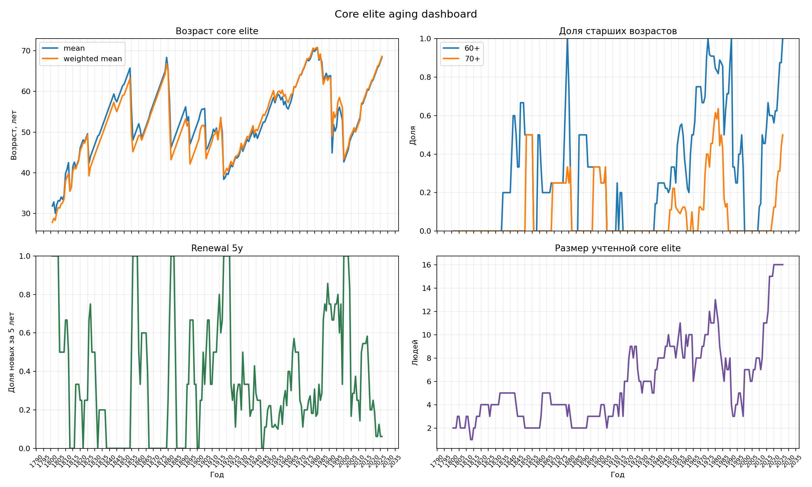
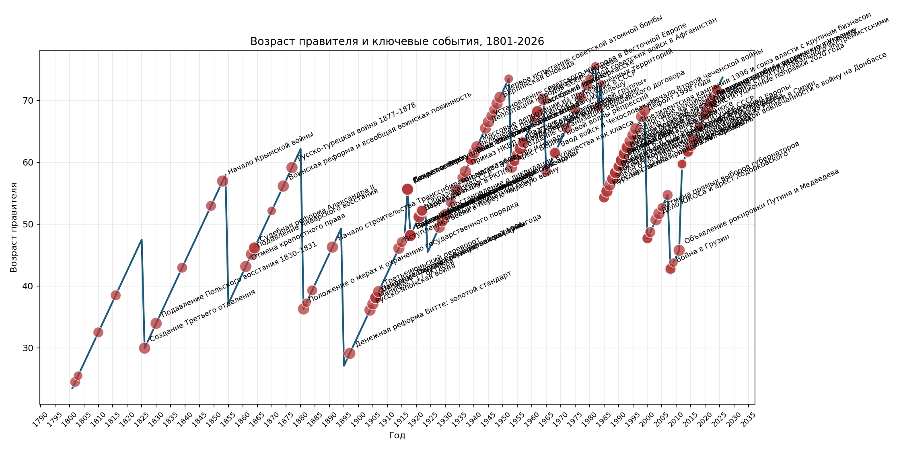
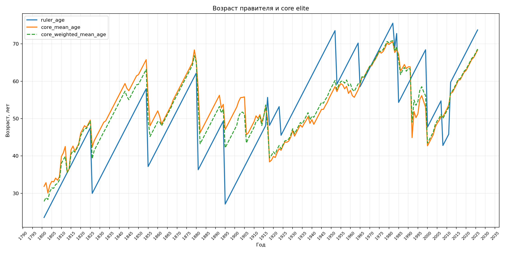
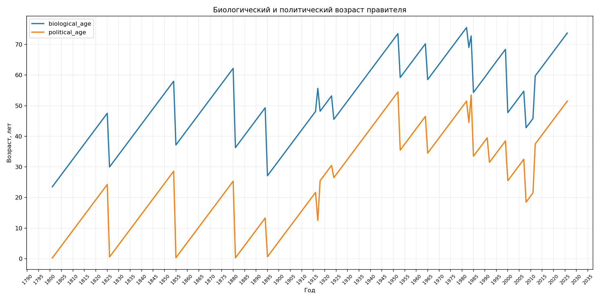
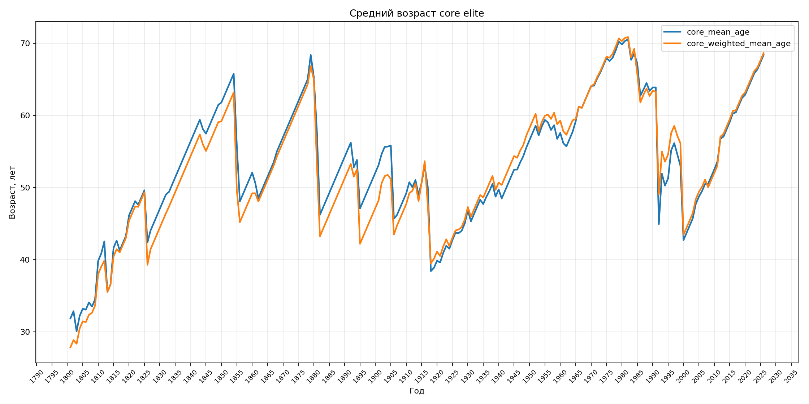
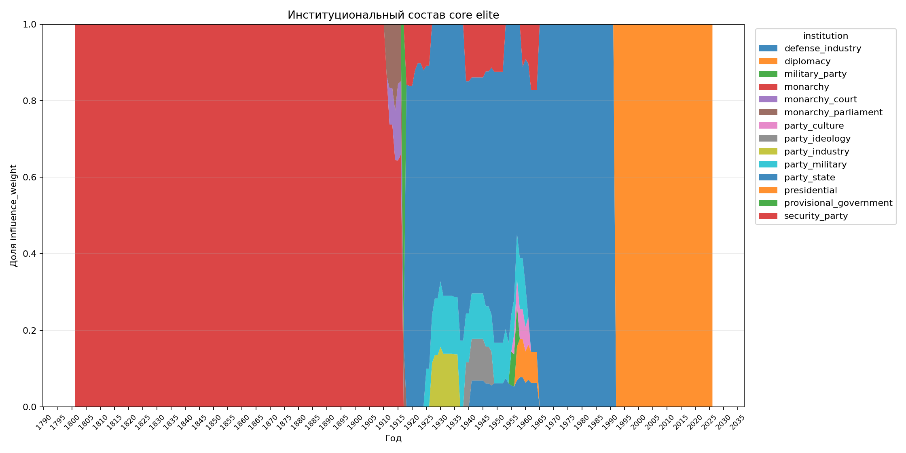
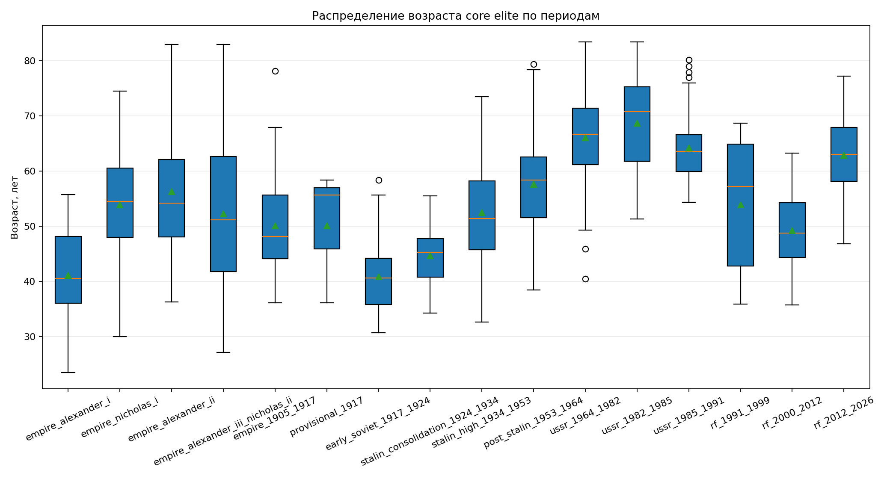
Ограничения
Это MVP, а не академически проверенный датасет. Многие
political_entry_date, elite_entry_date и
ruling_circle_entry_date приблизительные. Curated influence
intervals нужны для первых графиков и последующей ручной проверки.
Фракционный слой
Фракции здесь являются вероятностными multilabel-аннотациями, а не формальными институтами. Исторические faction_id периодно-специфичны; сравнение между эпохами корректнее делать через faction_type.
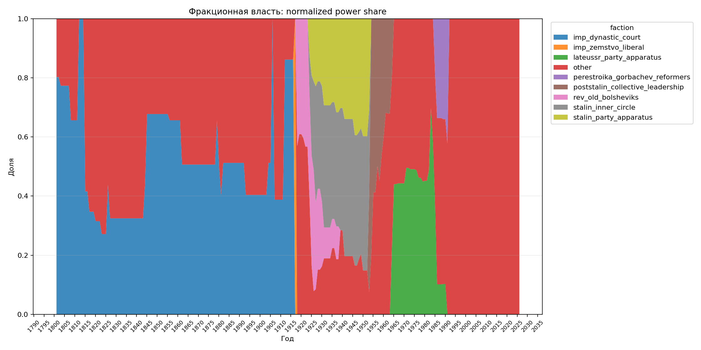
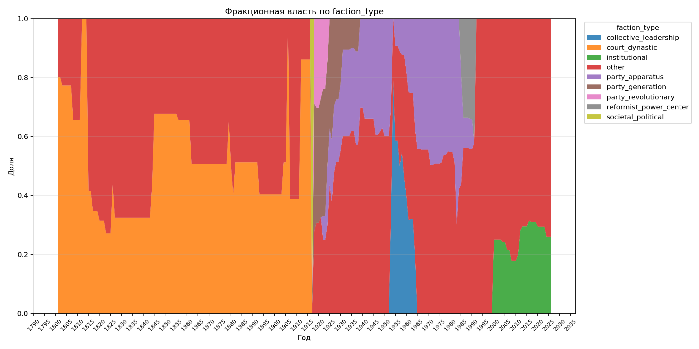
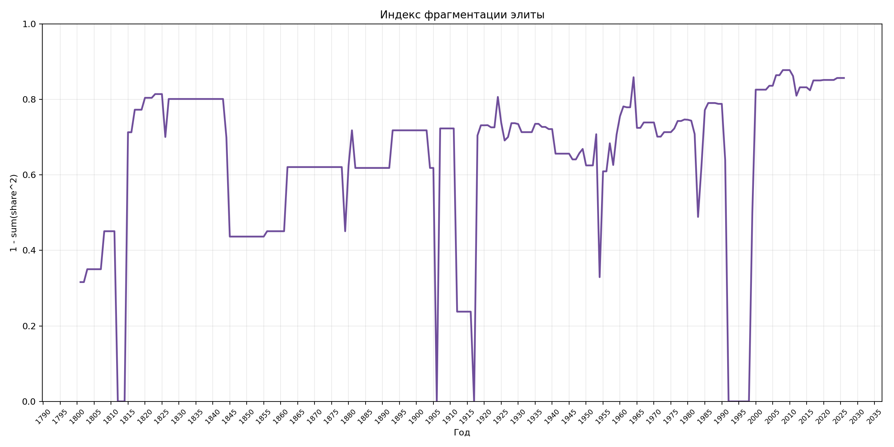
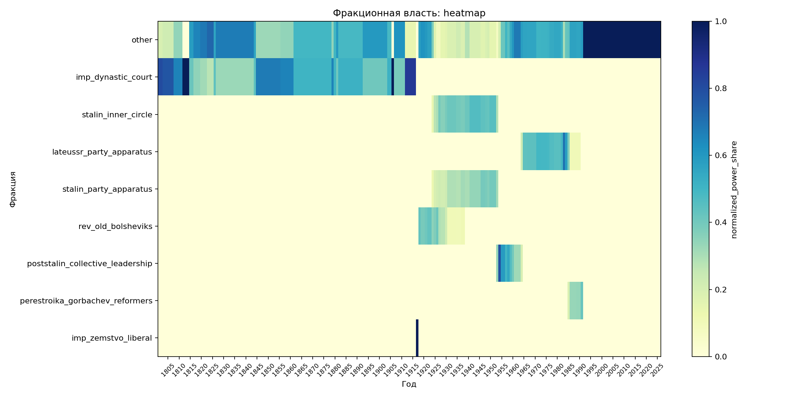
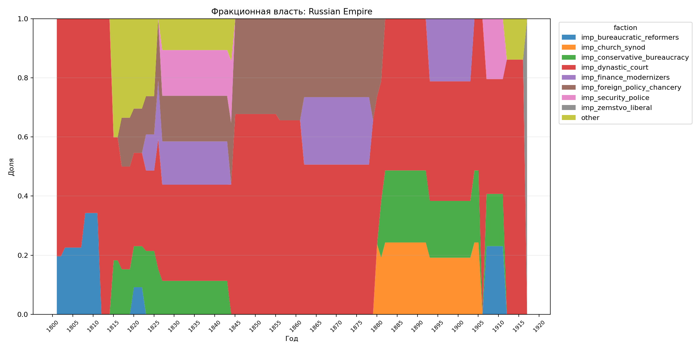
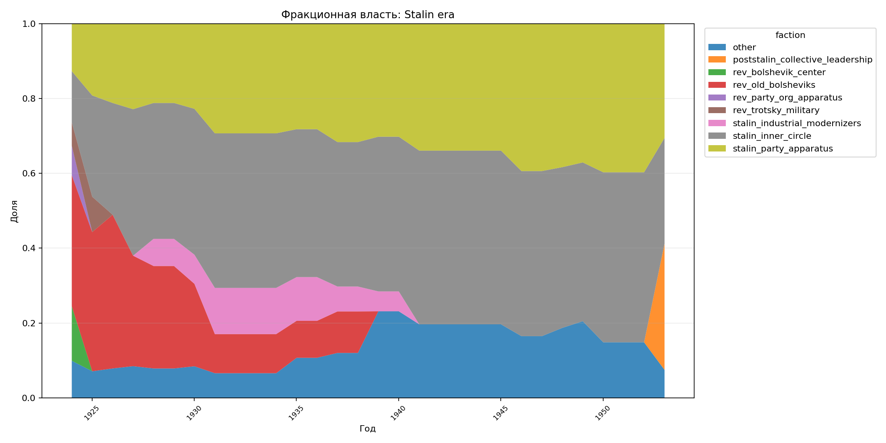
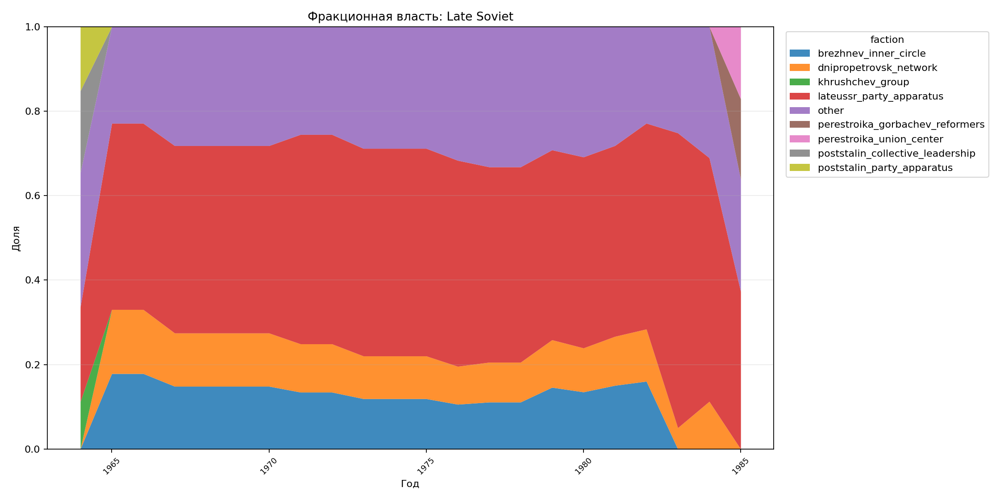
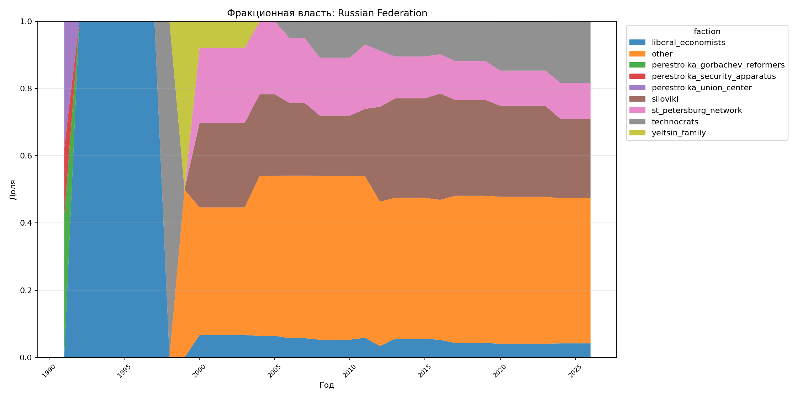